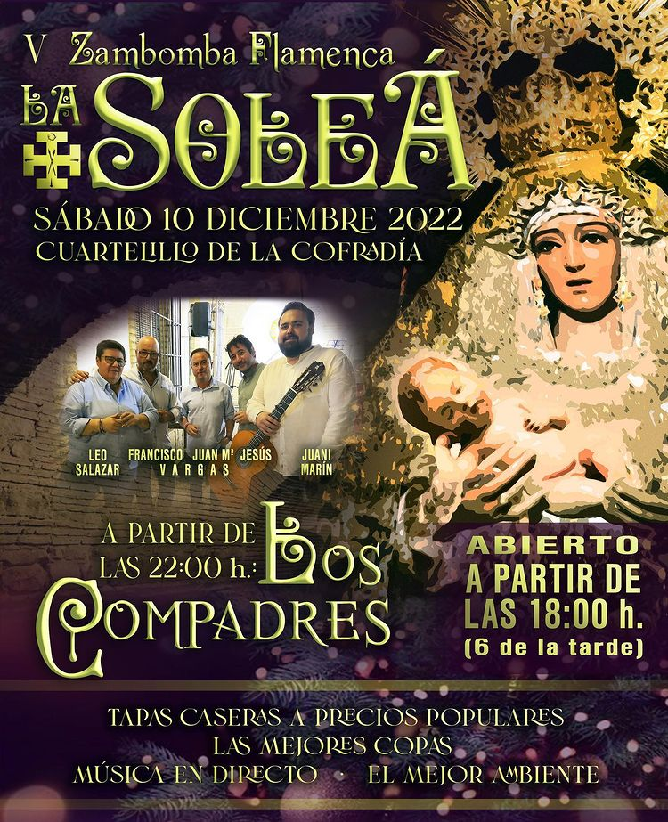
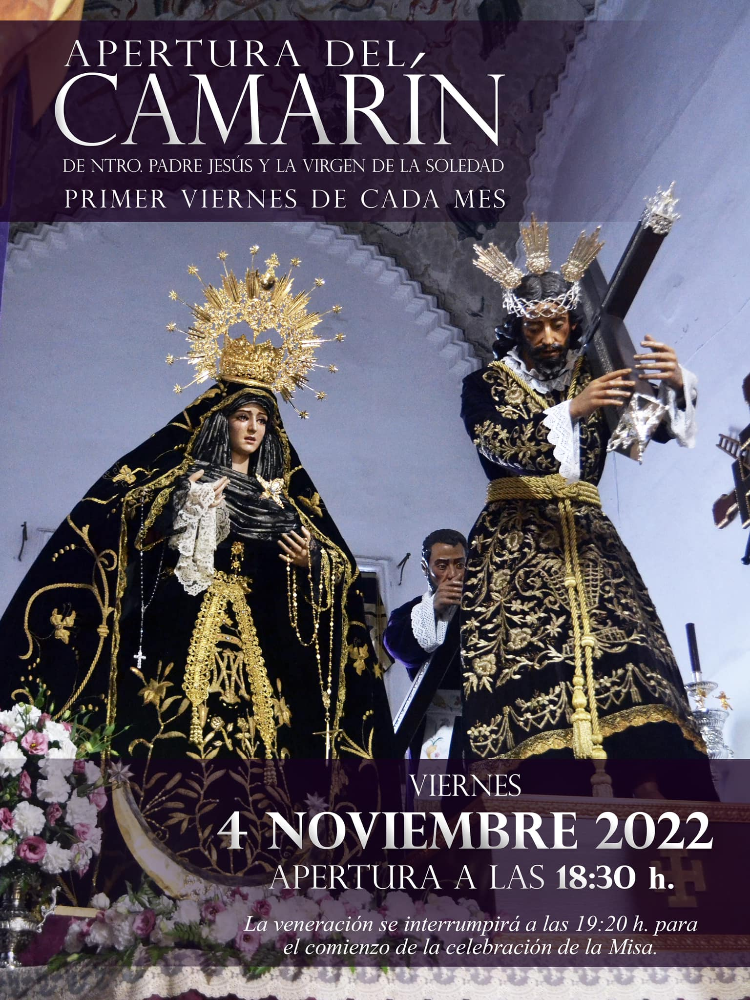

Actividades

Estas son alguna de las variadas reuniones y actividades que realizamos con nuestra hermandad a lo largo de todo el año para no perder nunca el espiritu de nuestro padre jesus nazareno.
Instagram
Zambomba Flamenca
Dic 10
SÁBADO, 10 de DICIEMBRE, no te puedes perder la V ZAMBOMBA "LA SOLEÁ", en el CUARTELILLO DEL NAZARENO.
Continuar Leyendo

Facebook
Apertura Camarín
Nov 4
Mañana, PRIMER VIERNES DE NOVIEMBRE, apertura del CAMARÍN de nuestros sagrados titulares a las 18:30 horas.
Continuar Leyendo
